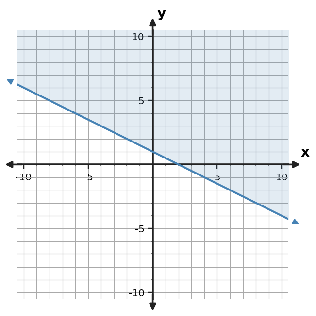

Algebra Practice 3.4 :::: Set 3
1. Write an inequality represented by the shaded graph. Include the correct inequality symbol.

2. A student graphs $y \lt x+2$ with a solid boundary and shades below. Identify the error.
3. Write an inequality represented by the shaded graph. Include the correct inequality symbol.

4. For $y \lt x+2$, state whether the boundary is solid or dashed and which side is shaded.
5. Write an inequality represented by the shaded graph. Include the correct inequality symbol.

6. Graph $y \gt 2x-1$ on a coordinate plane. Include the correct boundary style and shaded half-plane.
7. Write an inequality represented by the shaded graph. Include the correct inequality symbol.

8. A student graphs $y \ge -2x-3$ with a solid boundary and shades below. Critique the graph and state the needed correction.
9. Write an inequality represented by the shaded graph. Include the correct inequality symbol.

10. For $y \lt x+2$, state whether the boundary is solid or dashed and which side of the line is shaded.
11. Use the test-point table to decide whether $(0,0)$ belongs in the solution region for $y \lt x+2$.
| Test point | Left side $y$ | Boundary value | Satisfies? |
|---|---|---|---|
| $(0,0)$ | 0 | 2 | Yes |
12. Use the test-point table to decide whether $(0,0)$ belongs in the solution region.
| Test point | Left side y | Boundary value | Satisfies? |
|---|---|---|---|
| (0,0) | 0 | 3 | No |
13. Write an inequality represented by the shaded graph. Include the correct inequality symbol.

14. A student graphs $y \ge -2x$ with a solid boundary and shades below. Critique the graph and state the needed correction.
15. Write an inequality represented by the shaded graph. Include the correct inequality symbol.

16. For $y \lt -x+4$, state whether the boundary is solid or dashed and which side is shaded.
17. Use the test-point table to decide whether $(0,0)$ belongs in the solution region for $y \gt 2x-1$.
| Test point | Left side $y$ | Boundary value | Satisfies? |
|---|---|---|---|
| $(0,0)$ | 0 | -1 | Yes |
18. Construct the graph of $y \le -2x-3$ with the appropriate boundary style and shaded half-plane.
19. Write an inequality represented by the shaded graph. Include the correct inequality symbol.

20. A student graphs $y \ge x$ with a solid boundary and shades below. Critique the graph and state the needed correction.
21. Write an inequality represented by the shaded graph. Include the correct inequality symbol.

22. For $y \le x-4$, state whether the boundary is solid or dashed and which side is shaded.
23. Use the test-point table to decide whether $(1,-2)$ belongs in the solution region for $y \le -x+2$.
| Test point | Left side y | Boundary value | Satisfies? |
|---|---|---|---|
| (1,-2) | -2 | 1 | Yes |
24. Graph $y \lt x+2$ on a coordinate plane. Include the correct boundary style and shaded half-plane.